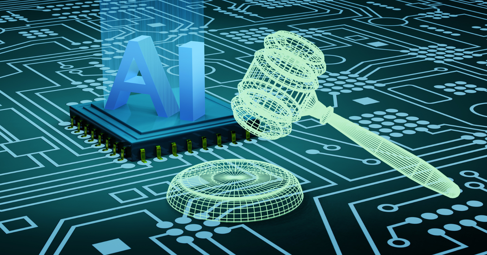
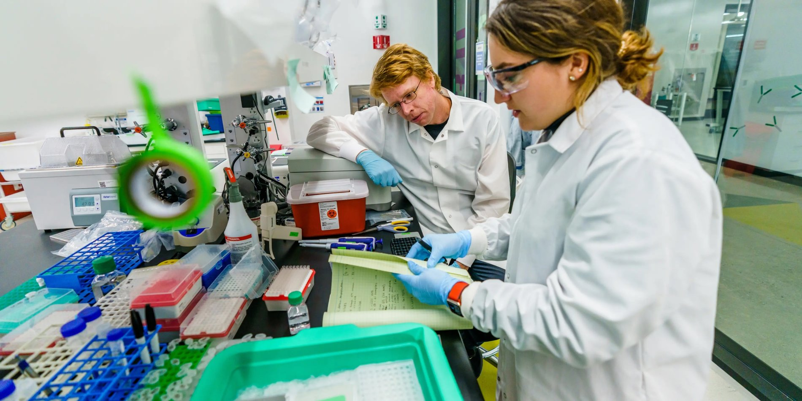

Quantum Computers: The Gateway to the Future
A deep dive into qubits, superposition, entanglement, and why quantum computing will change everything from drug discovery to cryptography.
Written by Kerem Tüzün
A deep dive into qubits, superposition, entanglement, and why quantum computing will change everything from drug discovery to cryptography.

How ethical are the algorithms that govern hiring, lending, healthcare, and more? Examining bias, accountability, and the road to responsible AI.

From CRISPR gene editing to synthetic biology and biosensors, the merger of life and engineering is accelerating faster than most people realize.

Engineers and scientists are genuinely planning human settlement on Mars. What would it actually take, and are we really ready for it?

Neuralink and its competitors are racing to connect the human brain directly to digital systems. What does that mean for medicine and for society?

Solar costs have collapsed, wind is breaking records, batteries are scaling up. An honest look at whether the technology can keep pace with the crisis.

The most powerful telescope ever built is showing us galaxies from 13 billion years ago and probing the atmospheres of planets around other stars.

In December 2022, fusion ignition was achieved for the first time. What does this historic milestone mean, and how far are we from a working power plant?